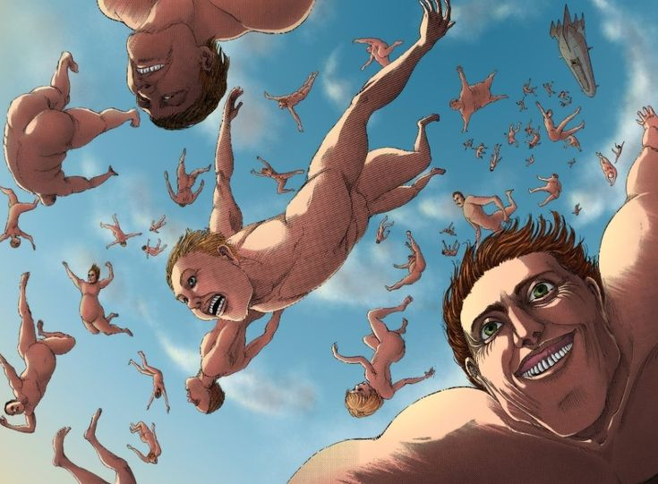
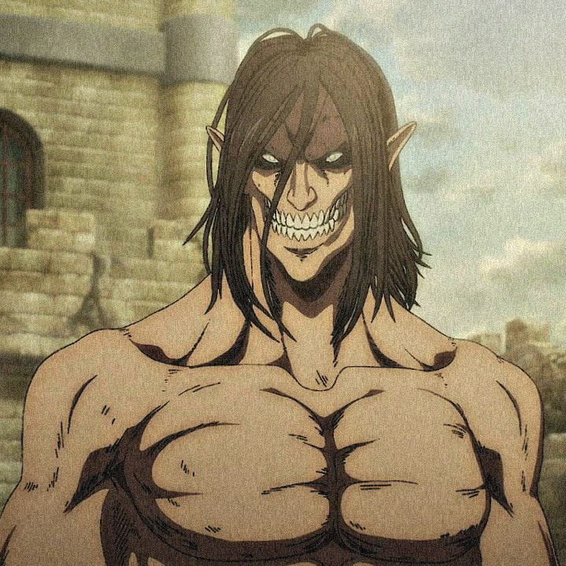
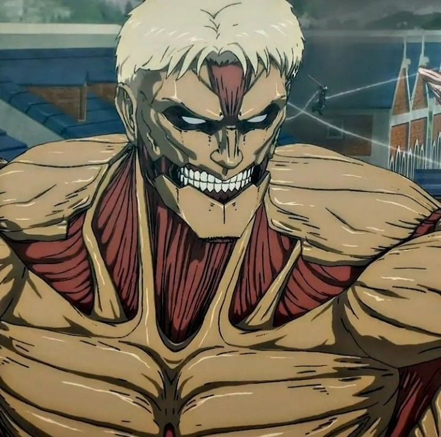
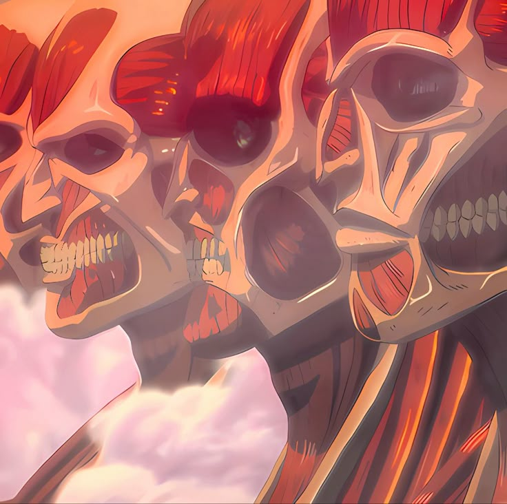
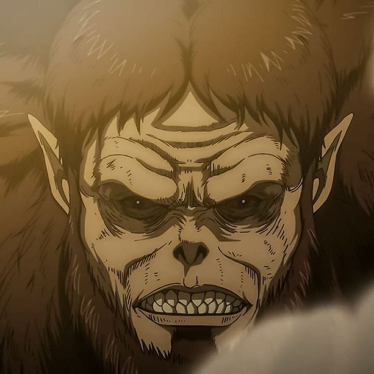

En el mundo de Attack on Titan, identificar correctamente el tipo de Titán al que te enfrentas puede significar la diferencia entre la vida y la muerte. Esta guía te enseñará a reconocer las diferentes variedades y sus características únicas.
1. Titanes Comunes
Altura: 3-15 metros
Características:
- Expresión facial vacía o sonrisa tonta
- Movimientos lentos y torpes
- Sin inteligencia aparente
- Atraídos por grandes concentraciones humanas
Estrategia: Son los más fáciles de evadir. Usa edificios altos y espacios estrechos.
2. Titanes Aberrantes
Altura: Variable (5-15 metros)
Características:
- Movimientos rápidos e impredecibles
- Pueden ignorar a humanos cercanos
- Posturas y movimientos antinaturales
- Expresiones faciales más variadas
Estrategia: Extremadamente peligrosos. Evita el contacto visual.
3. Titanes Acorazados
Altura: 15 metros
Características:
- Piel dura que actúa como armadura natural
- Estructura ósea visible en algunas áreas
- Movimientos más coordinados
- Ojos visibles a través de la armadura
Estrategia: Busca puntos débiles en articulaciones.
4. Titanes Colosales
Altura: 60 metros
Características:
- Altura que supera las murallas
- Piel que emite vapor extremadamente caliente
- Rasgos faciales más definidos
- Músculos expuestos en piernas y brazos
Estrategia: Mantén distancia del vapor quemante.
5. Titanes Bestia
Altura: 17 metros
Características:
- Apariencia animal (pelaje, rasgos faciales bestiales)
- Capacidad de lanzar objetos con precisión
- Inteligencia superior
- Movimientos más ágiles
Estrategia: Mantente en movimiento constante.
Tabla Resumen
| Tipo | Altura | Característica Principal | Nivel de Peligro |
|---|---|---|---|
| Comunes | 3-15m | Comportamiento errático | ★☆☆☆☆ |
| Aberrantes | 5-15m | Movimientos impredecibles | ★★★☆☆ |
| Acorazados | 15m | Piel blindada | ★★★★☆ |
| Colosales | 60m | Emisión de vapor | ★★★★★ |
| Bestia | 17m | Capacidad de lanzamiento | ★★★★☆ |
Conclusión
Reconocer los diferentes tipos de Titanes es una habilidad esencial. Mientras que los Titanes comunes pueden ser relativamente fáciles de evitar, las variedades especiales requieren estrategias específicas. Reporta cualquier avistamiento inusual a las autoridades inmediatamente.